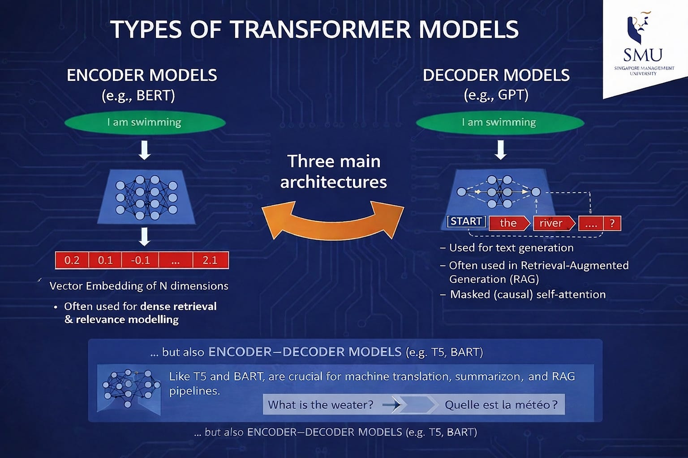
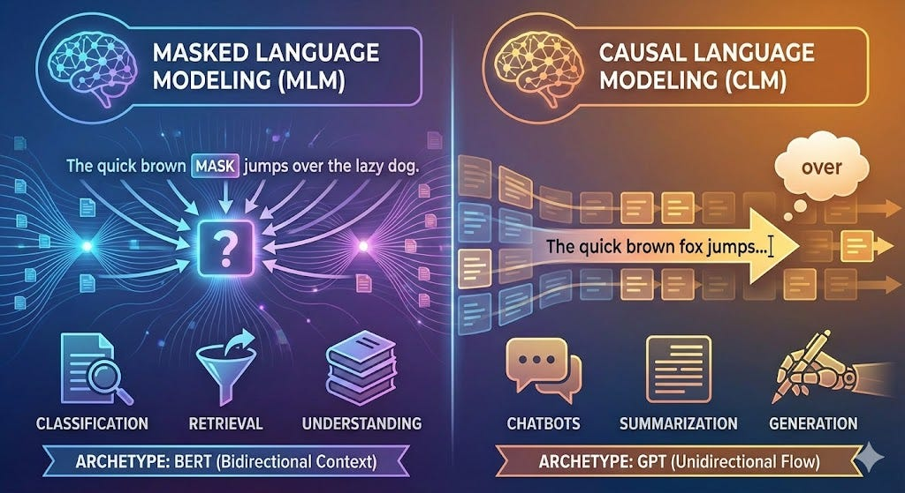
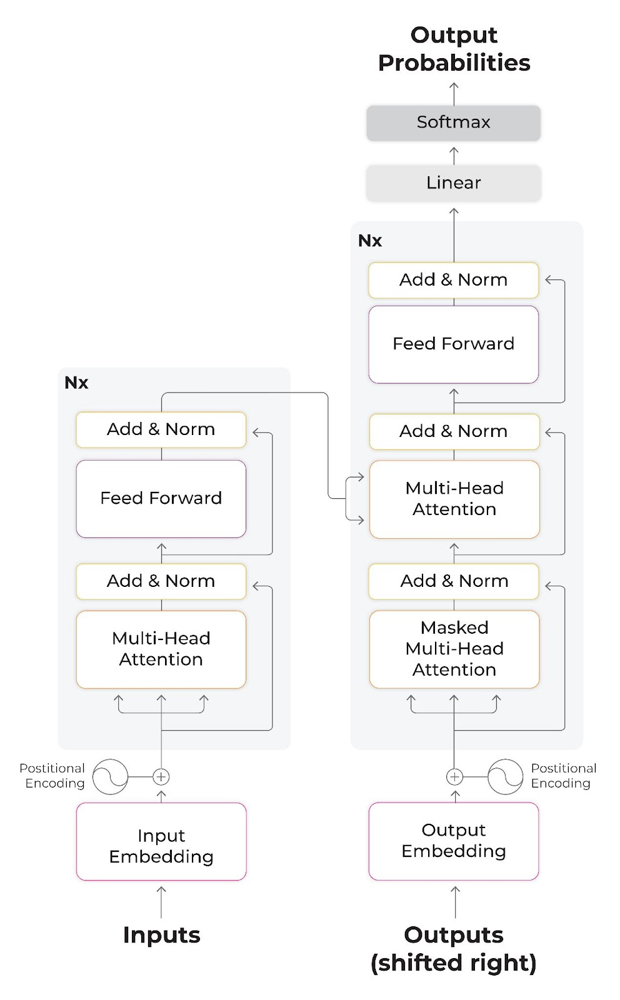

Jour 4 matin : Les modèles génératifs
![]()
2026-06-11
Programme de la matinée
AM: (3h) - Présentation des modèles génératifs (60 minutes + 30 minutes démonstration) (alexia?) + (william?) - Encoder/decoder et masquage - Paramétrages d’un LLM génératif - PAUSE (15 minutes) - Classification avec modèles génératifs (45 minutes + 45 minutes d’exercice) (alexia?) - Prompt engineering
Les LLMs
Hier, nous avons vu les bases de l’apprentissage profond, aujourd’hui, on passe aux grands modèles de langue ou Large Language Model.
Il existe en réalité 3 types de LLMs :
- encodeurs purs,
- décodeurs purs
- encodeur-décodeurs
Cette typologie réfère à la façon dont le modèle a été entrainé, et par conséquent à la tâche pour laquelle il est spécialisé à l’inférence (= prédiction).

Overview
Source : Tay (2025)
Décodeurs (GPT)
Dans le langage courant ce sont les IA génératives : ces modèles font de la prédiction de token suivant (causal language modelling).
Ce sont des modèles auto-régressif : on fournit en entrée au modèle un prompt qui comprend l’instruction du développeur suivi de chaque token produit jusqu’à présent par le modèle.
Exemple :
L’utilisateur entre “Quelle est la capitale de la France?”
Le modèle au premier tour reçoit :
"<systemPrompt>Tu es un gentil assistant.</systemPrompt>
<userMessage>Quelle est la capitale de la France ?</userMessage>Le modèle prédit le premier token: “La”
Au deuxième tour le modèle reçoit:
"<systemPrompt>Tu es un gentil assistant.</systemPrompt>
<userMessage>Quelle est la capitale de la France ?</userMessage>
<chatMessage>La</chatMessage>Le modèle prédit le token suivant: “capitale”
Au deuxième tour le modèle reçoit:
"<systemPrompt>Tu es un gentil assistant.</systemPrompt>
<userMessage>Quelle est la capitale de la France ?</userMessage>
<chatMessage>La capitale</chatMessage>etc.
Pour déterminer que la prédiction est finie, le modèle prédit un token spécial <EOF>
Encodeurs (BERT)

Comparaison encodeur vs. décodeurs
BERT : Bidirectional Encoder Representation from Transformers
L’entrainement de ces modèles repose sur le masquage de tokens : le modèle généralise à partir d’un encodage bidirectionnel. Leur utilisation est ainsi surtout pour la classification même s’ils peuvent aussi servir à faire de la génération en théorie.
Encodeur-décodeur (BART)
Partie encodage sert à “comprendre” l’entrée en langue naturelle, partie décodage sert à produire une sortie structurée. Typiquement utilisé pour de la traduction automatique.
Encodage : l’architecture Transformers
Tous les modèles de langue ne sont pas des Transformers mais les Transformers demeurent l’architecture la plus connue et la plus répandue actuellement.

Schéma du célèbre Vaswani et al. (2017)
Encoder les données (à l’entrainement et à l’inférence) passe par plusieurs étapes:
- embedding : vectorisation selon un nombre défini de dimension (512 pour les BERT).
- encodage des positions : les tokens sont traités simultanément alors on conserve la position de chaque token dans la phrase dans l’embedding.
- mécanisme d’attention : ajustement des “poids” en fonction de l’importance du token dans la phrase; Création des vecteurs Q, K, V (Query, Key, Value) : Pour chaque mot (représenté par son vecteur), le modèle génère trois nouveaux vecteurs via des matrices de poids apprises :
- Query (Q) : Représente ce que le mot “cherche” dans la phrase.
- Key (K) : Représente ce que le mot “offre” ou contient.
- Value (V) : Contient l’information réelle du mot qui sera utilisée pour la sortie.
Calcul de la pertinence de chaque mot par rapport à un mot cible : produit scalaire entre la Query du mot cible et la Key de tous les autres mots. Cela produit un score de similarité : plus le score est élevé, plus les deux mots sont liés dans ce contexte. Ces scores sont ensuite divisés par une racine carrée (pour stabiliser les gradients) et passés à travers une fonction Softmax.
Pondération et Somme : Le modèle multiplie chaque vecteur Value (V) de tous les mots par le pourcentage d’attention calculé précédemment. Il somme ensuite ces valeurs pondérées. Le résultat est un nouveau vecteur pour le mot cible : il contient non seulement l’information du mot lui-même, mais aussi une synthèse de toutes les informations des mots qui lui sont liés (ex: pour le mot “banque” dans “je vais à la banque de la rivière”, l’attention sera forte sur “rivière” et faible sur “argent”, produisant un vecteur qui reflète le sens de “lieu” et non de “finance”).
Le processus est répété : plusieurs têtes d’attention servent à identifier des relations de type différents.
Entrainement : les couches d’attention sont passées dans le réseau de neurone et deviennent la première couche de la prochaine étape d’entrainement.
(dans le cas des décodeurs) : à l’inférence, la sortie devient l’entrée comme expliqué plus tôt.
Source + explication paraphrasée de Euria.
Inférence : paramètrer un décodeur pur
Ces paramètres concernent l’inférence et non l’entraînement du modèle.
- Le seed (nombre que l’on peut choisir): les LLMs ont une variable aléatoire au moment de l’encodage des données et au moment du requêtage : le seed permet d’utiliser toujours le même ordre aléatoire, càd d’obtenir pour un même prompt toujours la même réponse. Enjeu de reproductibilité.
- La température (valeur de 0 à 1): détermine le degré d’utilisation de la variable aléatoire. Une température élevée signifie que le modèle sera plus “créatif” car il donnera plus probablement un token qui a une probabilité absolue moindre dans son contexte.
- top_k (valeur de 0 à 100): variable qui réduit la probabilité de générer des tokens absurdes. Une valeur élevée donne des réponses plus variées et une valeur basse des réponses plus conservatrices. (Défaut 40)
- top_p (valeur de 0 à 1): Fonctionne avec le top_k. Une valeur haute donne un texte varié, une valeur basse, un texte conservateur. (Défaut: 0,9)
Source : Documentation Ollama
Model Steering ou System message
Reconduire un modèle consiste à lui fournir des ordres qui vont modifier son comportement pour toutes les interactions suivantes : cette instruction initiale est le “System message”.
Bonus : Ollama
Utilisation de Ollama en invite de commande
ollama run llama3.2 -> télécharge et lance le modèle.
““” -> pour des instructions longues
/show info -> information sur le modèle téléchargé
ollama list -> liste des modèles téléchargés et utilisables
ollama rm llama3.2 -> supprime un modèle
Steering un model local
Voir :
jour4_steeringLLM_complet.ipynb
Pause
Travailler avec de l’“IA générative”
Contrairement à certaines des approches qu’on a pu voir les jours précédents, la génération par LLM contient des éléments d’incertitude qui mettent en jeu l’interprétabilité des résultats obtenus :
- probabiliste et stochastique : variable aléatoire peuvent varier les probabilité.
- très large dimension du jeu d’entrainement qui est non annoté -> préférence pour le reinforcement learning plutôt que l’annotation massive à la source.
- difficile interprétabilité de l’output et de la trace dans les couches neuronales.
Une solution : le prompt engineering.
Le prompt engineering
Rendre un prompt robuste et surtout permettre l’évaluation systématique d’une stratégie de prompt. Réintégrer une forme de modélisation de son problème pour optimiser un prompt : le template.
Éléments de prompt engineering
Tout repose sur l’évaluation des outputs du SIA. Comment passer d’une exploration opportuniste et empirique d’un prompt ou deux au déploiement d’un outil reposant sur un LLM avec un bonne certitude qu’il s’agit d’un système fiable ?
- concevoir des scénarios d’utilisation
- chercher les limites
- analyser les erreurs
- quantifier l’évaluation -> définir des mesures pertinentes pour la tâche à effectuer
Typologie d’évaluation
- Basé sur une référence : comparaison des sorties à partir d’une ground truth
- reference-free : test libre
- comparaison par paires : comparaison de deux sorties (ex : pour comparer la qualité de deux prompts)
- code-based : évaluation plus robuste
- LLM-based : peu fiable
- human-evaluation
Stratégies de prompt
- 0 shot
- few shots
- personas
- Chain of Thought (devenu ‘reasoning step’ inclus dans le LLM )
- formatted outputs
Bonnes pratiques
- Décomposer la tâche à effectuer.
- Composer un jeu de donnée a minima : cerner ce à quoi doit ressembler la sortie.
- Partir d’un exemple minimal avant de complexifier la tâche
ChainForge
ChainForge : outil de comparaison de prompt : comparaison de modèle, comparaison de template (un texte qui inclut des variables) visualisation côte à côte des sorties.
-> pas à pas de l’utilisation de ChainForge : exemple de la classification binaire en “animal/pas animal”
Exercice
Vous pouvez vous servir de votre propre jeu de donnée.
A défaut :
Effectuer une classification d’épigrammes selon 2 genres proches :
Romantique / Érotique
API :
Jeu de données : epigrammes_classification.csv
Formuler 3 prompts différents.
Ajouter les données avec l’import CSV.
Utiliser seulement le modèle : togetherAI/
Ajouter 2 évaluateurs LLM : le premier pour déterminer la qualité de la classification sur une échelle de 1 à 10. le second donnera une évaluation en True/False de la qualité de la classification. Ex “Donne une note de 1 à 10 sur la qualité de la classification : le modèle dont tu évalues la réponse devait déterminer si le texte suivant {épigramme} était romantique ou érotique”.
Comparer la qualité des sorties des différents prompts et la qualité des évaluations par les LLM.
Comment on obtient un LLM ?
Ces trois types de modèles de langue ont en commun la manière d’être entrainer.
Parce qu’il est possible d’entrainer plusieurs fois un modèle, on parle de pré-entrainement pour le premier entrainement qui mène au modèle de langue généraliste qu’on nomme un foundational model.
Les entrainements suivants servent à alignemer le LLM :
Foundational models : Pré-entrainement
Constitution d’un corpus non annoté
Apprentissage auto-supervisé : le modèle apprend à prédire le mot suivant ou remplir un blanc dans une phrase.
Encodage itératif : chaque mot/token est encodé en vecteur (embeddings) et le réseau ajuste ses poids en fonction du contexte.
Dès cette étape on obtient un modèle généraliste capable de faire des prédictions.